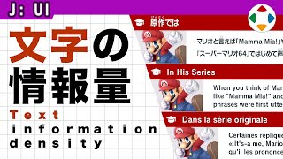
速览
用日语玩海外制作的游戏时，有没有觉得字怎么这么小？这也希望海外的人能意识到：合适的文字大小因语言而异。尤其日本、中国等使用的汉字空间用得大。比较日语和英语：含汉字的日语即使排出含同样信息的话，每个字都较大，但句子长度较短；英语的字母简单好认，字小也能辨认，但句子更长；到了法语，字符串更容易变长。同样的文本空间，信息的容纳方式因语言而异：每个字塞了一定信息量的感觉，和每个字信息量少的字母。如果只以英语为前提组布局，组成对文本变化没有灵活性的画面显示，就会出现字太小的困扰。不过和以前比，这种事好像减少了：制作者更注意了，当然游戏机分辨率也提高了，字的大小也更容易处理；还出现了能选字号的作品，这是非常周到的应对——以比较时尚画面为目标的游戏，留白多，也许更容易做到。像 Switch 这样以掌机为前提的作品，字多半组得比较大，一定会在掌机上确认，太小马上会发现。但字大得离谱，酷感可能会减少。另外像红白机这样分辨率低的游戏机，也用 8×8 点努力写汉字，大脑会帮着补全，有点有趣。这看起来像什么字？
1. 字太小？ 0:04
用日语玩海外制作的游戏时，有没有觉得字怎么这么小？这也希望海外的人能意识到：
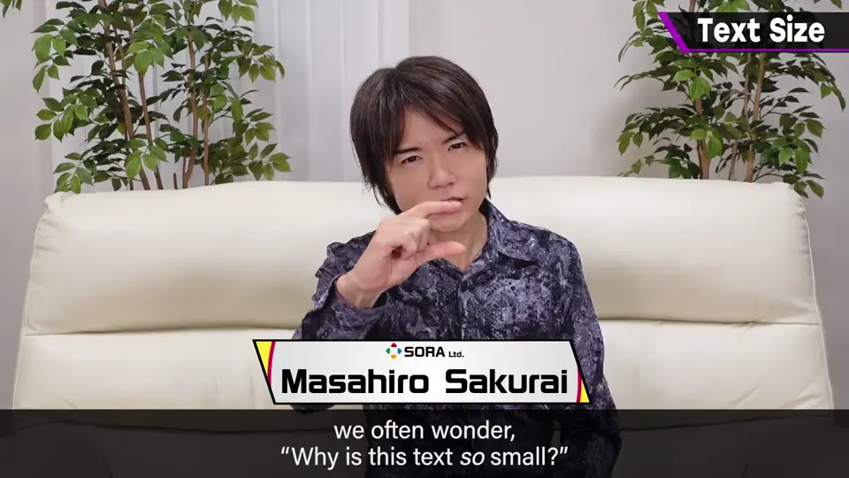
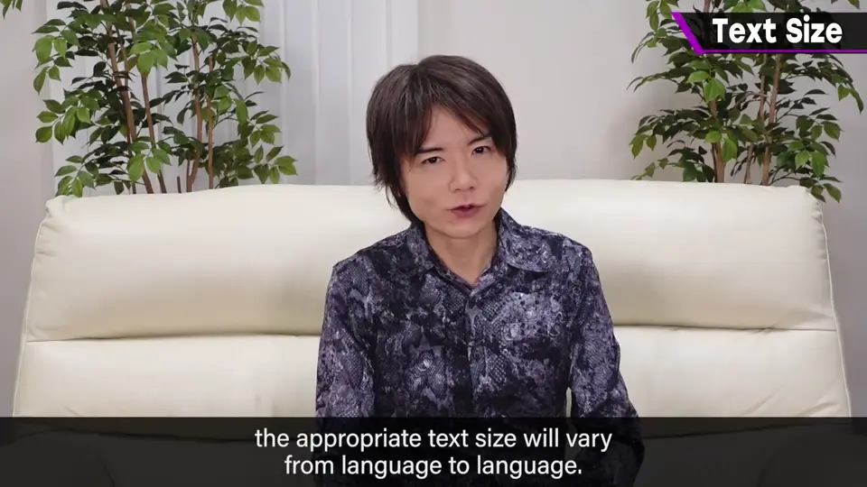
2. 语言的差异 0:21
尤其日本、中国等使用的汉字空间用得大。
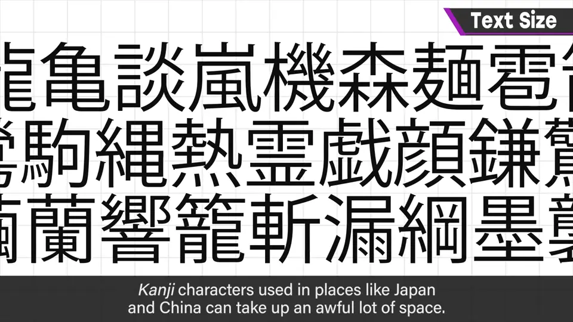
| 语言 | 每字信息 | 字号需求 | 句子长度 |
|---|---|---|---|
| 日语（含汉字） | 多 | 较大 | 较短 |
| 英语 | 少 | 小也能认 | 较长 |
| 法语 | 少 | 小也能认 | 往往更长 |
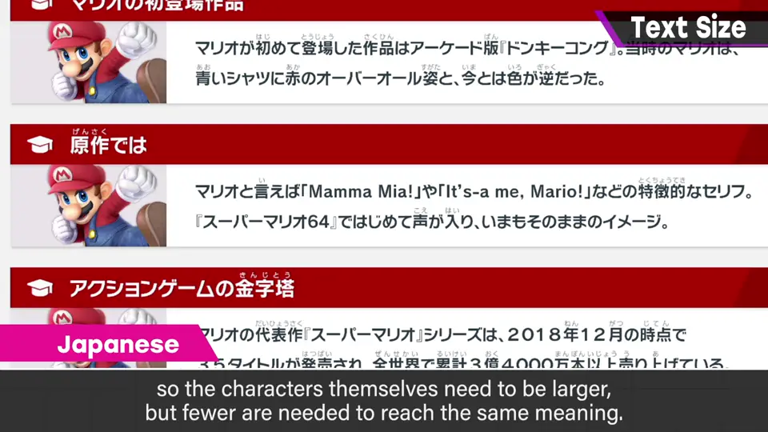
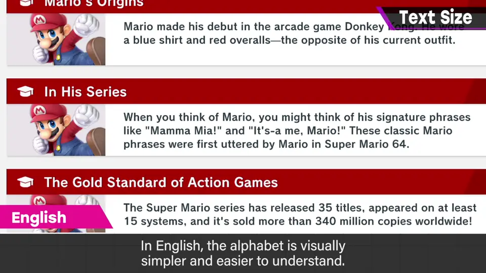
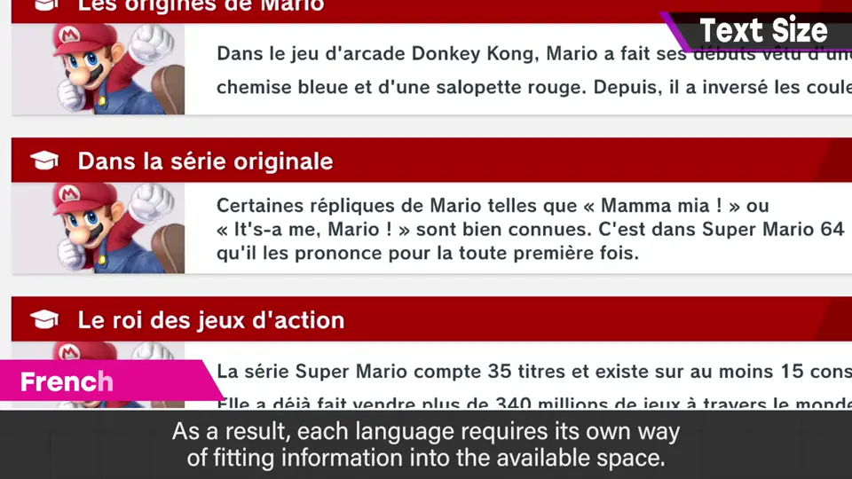
同样的文本空间，信息的容纳方式因语言而异：每个字塞了一定信息量的汉字，和每个字信息量少的字母。
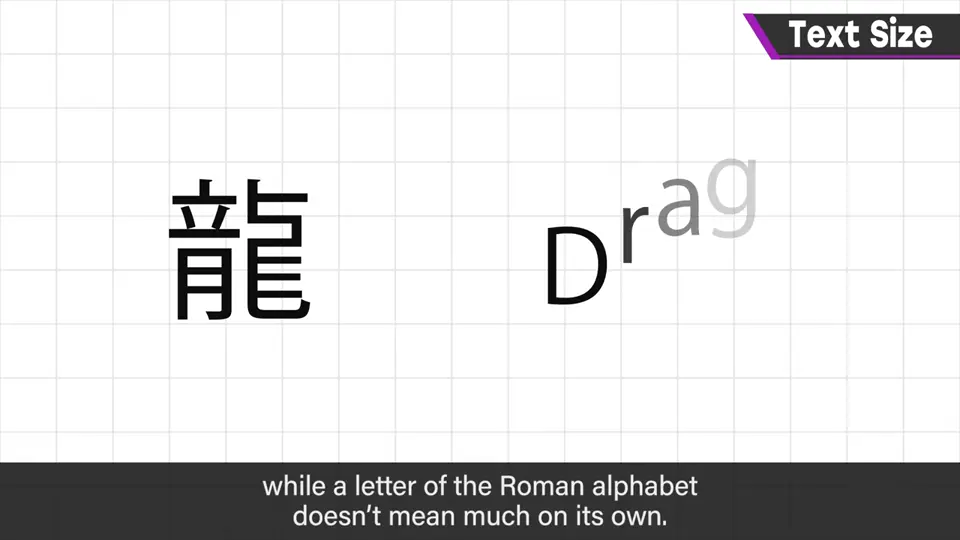
3. 只按英语布局的问题 1:09
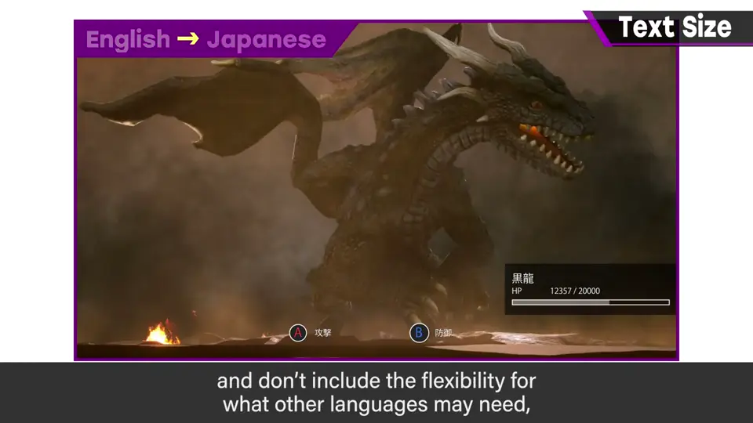
4. 如今的改善 1:21
和以前比，这种事好像减少了：制作者更注意了，当然游戏机分辨率也提高了，字的大小也更容易处理。
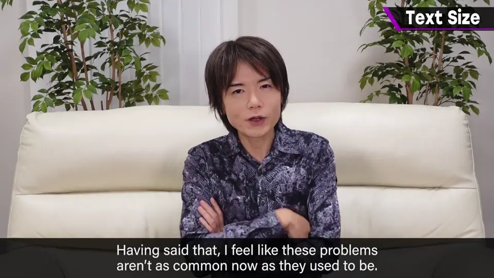
还出现了能选字号的作品，这是非常周到的应对；以比较时尚画面为目标的游戏，留白多，也许更容易做到。
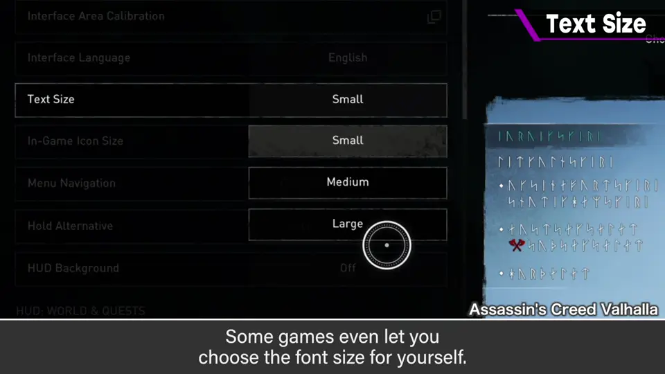
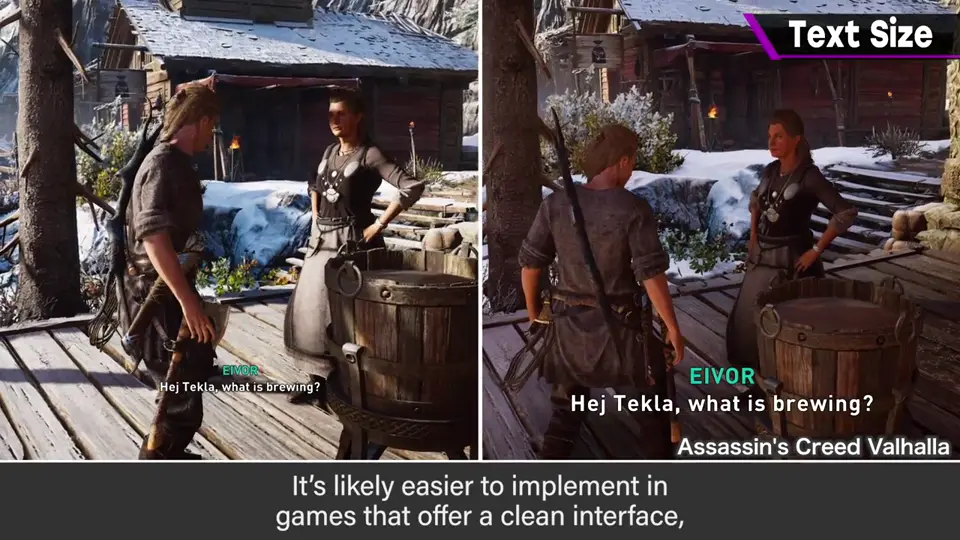
5. 掌机与酷感 1:56
像 Switch 这样以掌机为前提的作品，字多半组得比较大；一定会在掌机上确认，太小马上会发现。
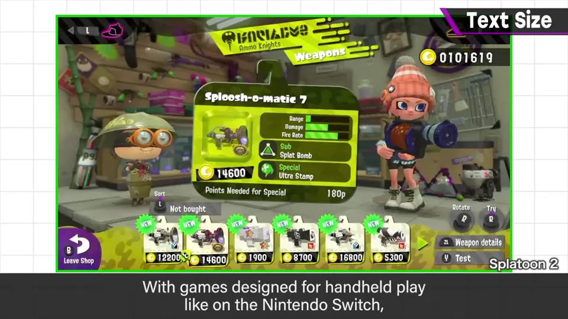
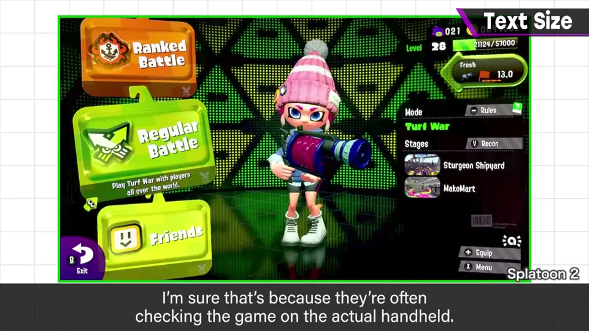
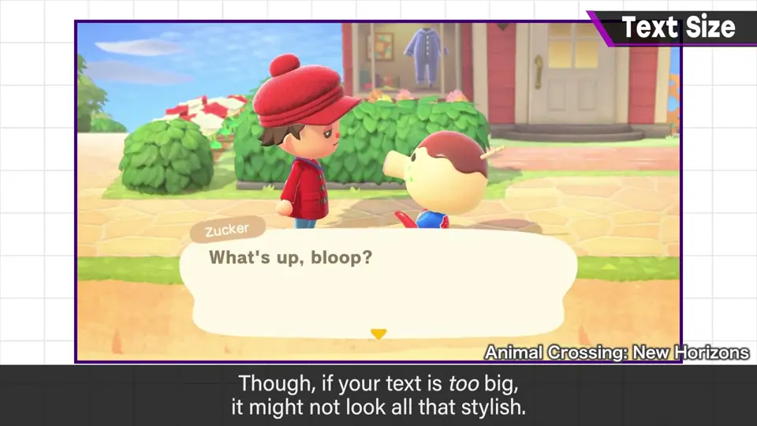
但字大得离谱，酷感可能会减少。
6. 红白机的汉字 2:16
红白机这样分辨率低的游戏机，也用 8×8 点努力写汉字，大脑会帮着补全，有点有趣。
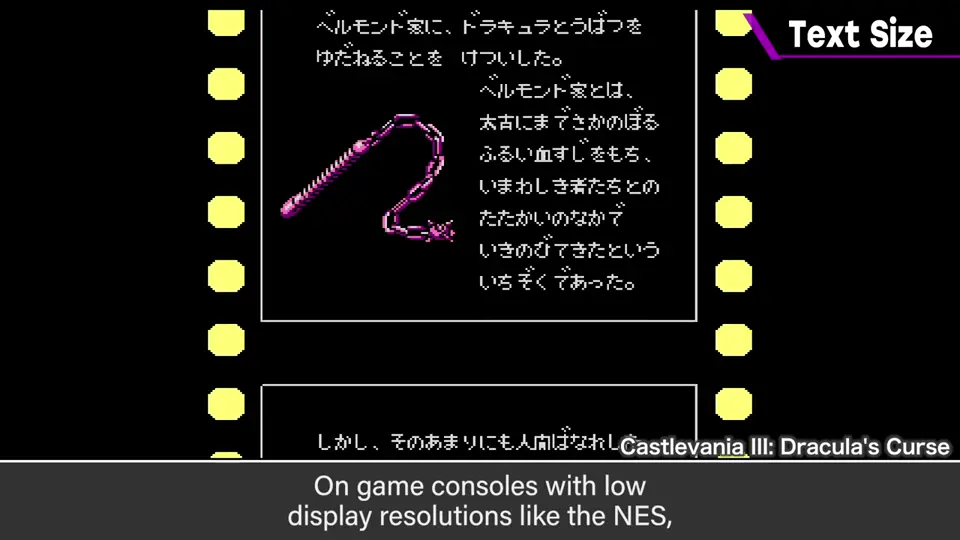
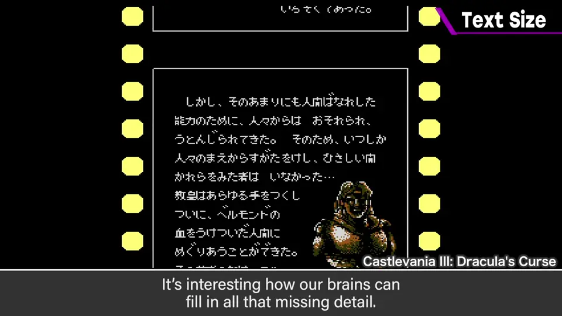
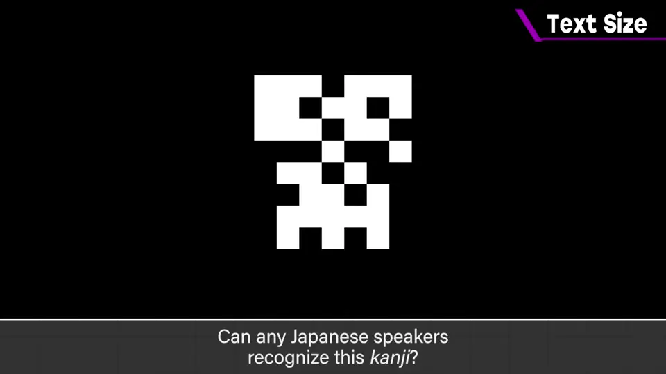
这看起来像什么字？
自测题
1. 日语与英语在文本空间上有什么不同？
日语一字信息多、字需较大但句子短；英语字母小也能认但句子长。 0:40
2. 什么样的布局会导致字太小？
只以英语为前提、对文本变化没有灵活性的布局。 1:15
3. 字号过大有什么副作用？
酷感（时尚感）会减少。 2:15